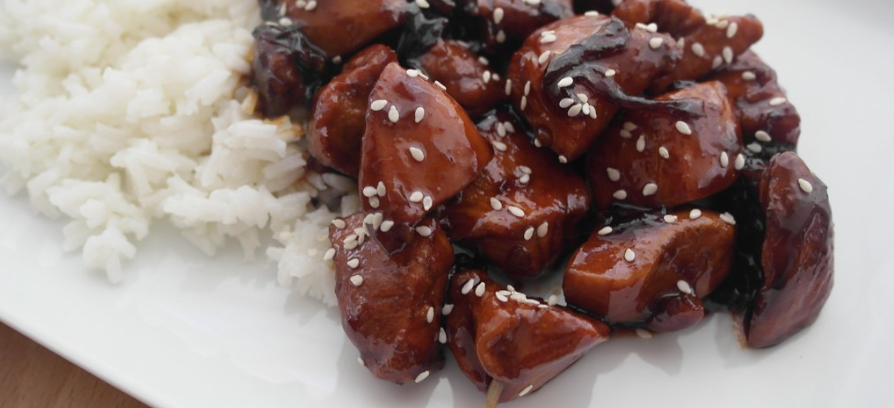
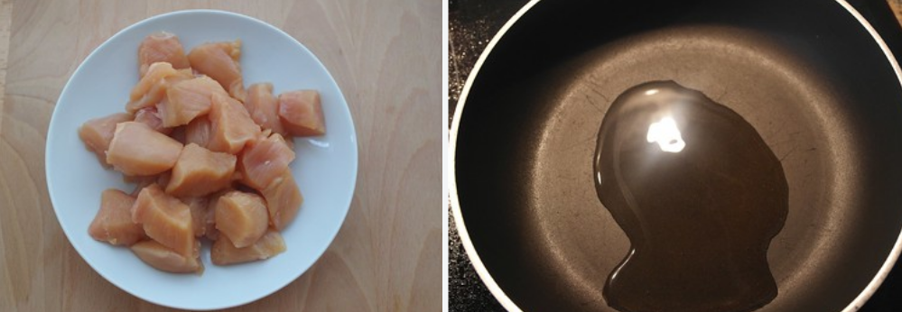
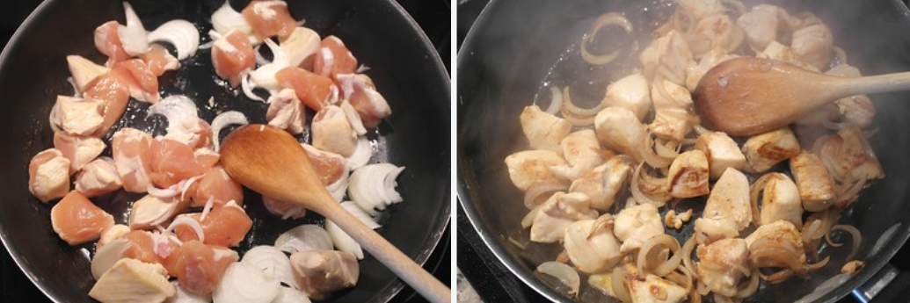
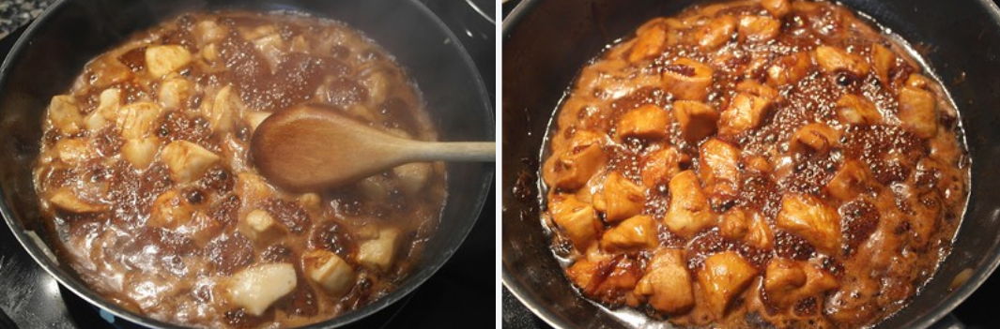

Pollo teriyaki con arroz blanco
Esta receta trata de uno de los platos japoneses más conocidos en occidente, junto con el sushi y el sashimi, y se ha convertido en una receta recurrente para los amantes de la cocina japonesa.
El pollo teriyaki es una receta muy sencilla que fácilmente podemos hacer nosotros mismos. En realidad el teriyaki es una técnica culinaria que consiste en cocinar los alimentos en una salsa dulce, ya sea al horno o a la parrilla. La palabra teriyaki deriva de teri, refiriéndose al brillo o lacado que le aporta la salsa en la que se baña, y yaki, indicando el método de cocina sumergiendo el producto dentro de la salsa.
Podemos hacer teriyaki con otro tipo de carnes (cerdo, vaca, atún, salmón…) y formas, es muy conocido el yakitori teriyaki, unas brochetas de pollo y verduras cocinadas al estilo teriyaki.
El mirin es un vino dulce de menor graduación que el sake. Se puede consumir tal cual o después de una reducción para eliminar su alcohol.
El sake, o mejor dicho, lo que en occidente se conoce como sake, es un vino de arroz. Una bebida alcohólica preparada de una infusión a partir de arroz, que en Japón se llama nihonshu. La palabra sake en japonés significa bebida alcohólica. La mezcla de todos estos ingredientes nos ayuda a preparar esta deliciosa receta.
Ingredientes
- 4 pechugas de pollo
- 1 cebolleta grande
- 200 ml de salsa de soja
- 100 ml de Mirin
- 100 ml de sake
- 100 gr de azúcar
- 5 gr de piel de jengibre
- 4 cucharadas de aceite de oliva
- 250 gr de arroz blanco
Preparación de la salsa teriyaki
1. La salsa teriyaki se hace mezclando y calentando cuatro ingredientes: azúcar, takara mirin, salsa de soja y sake (este último puede ser sustituido por otro tipo de alcohol), además se le puede añadir la frescura del jengibre. Los ingredientes no tienen porqué estar en la misma proporción, sino que depende de la receta.
2. Preparamos nuestra salsa echando la salsa de soja, el Mirin, el azúcar, el sake y la piel de jengibre a un cazo. Calentamos a fuego alto y removemos hasta que se disuelva el azúcar.
3. Dejamos cocer durante 3 minutos removiendo de vez en cuando. Colamos la salsa y reservamos. En caso de que no queráis hacer la salsa en casa tenéis la opción de comprarla ya hecha, pero no queda igual de rico.
Preparación del pollo teriyaki
1. Limpiamos las pechugas de pollo de posibles restos de grasa y venitas que pueda tener. Las troceamos en dados no demasiado pequeños.
2. Como acompañamiento al pollo lo más habitual es utilizar cebolla o cebolleta fresca que se cocina con la carne. Con cualquiera de las dos conseguiremos que al final quede caramelizada gracias al azúcar de la salsa teriyaki. En este caso hemos elegido una cebolleta grande, la cortamos en juliana en tiras gruesas.
3. En una sartén amplia ponemos a calentar el aceite y añadimos los trozos de pollo y la cebolleta. Doramos durante unos 5 o 6 minutos. Añadimos la salsa teriyaki casera que tenemos preparada y dejamos cocer a fuego medio durante 15 minutos. Si vais a emplear una salsa teriyaki industrial, con unos 5 minutos sería suficiente.
4. Veremos que el pollo está brillante, como lacado con la salsa, y esta casi se ha consumido. Servimos el pollo con arroz blanco, si os atrevéis os dejo con esta receta de arroz basmati, ideal para este plato.